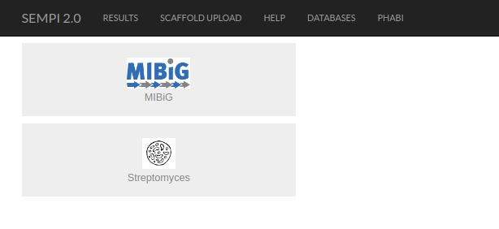
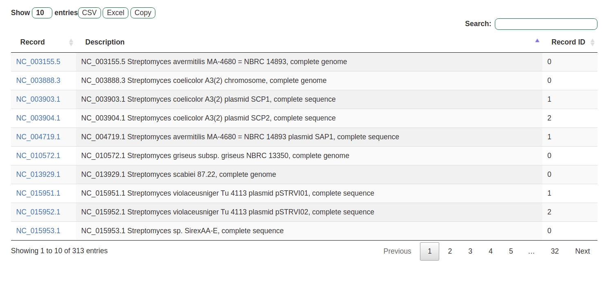
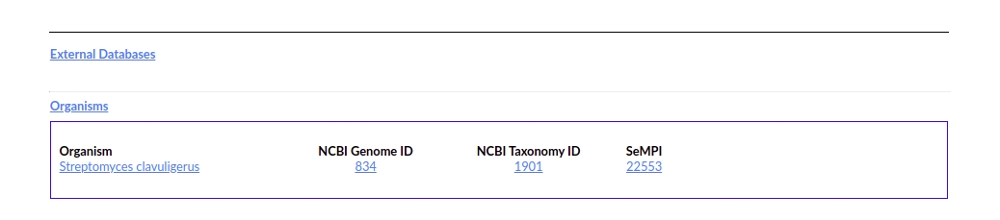

Preprocessed Database¶

SeMPI 2.0 also includes two preprecessed databases. All PKS and NRPS gene clusters of the MIBiG were also processed with SeMPI 2.0. Fruthermore a selection of streptomyces genomces are also available.

The streptomyces genomces correspond to genomes related to secondary metabolites stored in the streptomeDB 3.0 .
The preprecessed genomes are linked on the corresponding compound card:

This interoperability allows for the comparison of predicted scaffolds to the described secondary metabolites.